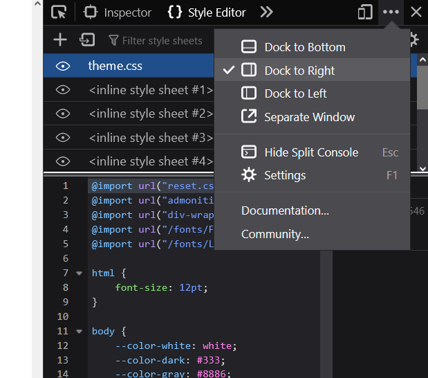

Requirements
URL Format
Make sure to familiarize yourself with the URL format.
Reading materials
In the checkpoints 3 and 4 you must use either relative, or "implicit domain name" URLs for links between pages of your website. When making links to other websites, use full URL format.
Example
- relative
images/example.png../../css/example.css
- implicit domain
/index.html/images/phone/example.jpg
- full URL
https://developer.mozilla.org/en-US/docs/Learnhttps://google.com
Warning
Using a file:// URL will be considered a major mistake in checkpoints 3 and 4. These links only work on your computer, and will break if you move the website to another folder!
Code in the Report
- Minifier
- A "minifier" is a tool, which can compress your HTML and CSS code by removing spaces and line breaks. This does not prevent the code from working, but makes it difficult to read for humans. On the positive side, it becomes more compact.
- Beautifier
- A "beautifier" is a tool, which automatically inserts spaces and line breaks into your HTML and CSS code, making it easier to read. It can restore minified code to a readable state.
When inserting code into the pdf report:
- use a monospace font for code (
Liberation Mono,Courier New, or similar) - use a smaller font size, than normal text
- normal text: 14 pt
- code: 10 pt
- do NOT copy the formatting from your IDE (background, font color, etc.)
- run your code through a minifier prior to inserting into pdf
Warning
Run every .html and .css file through a validator before submitting!
Server
For php code to function, you need a server. Simply opening a .php file in your browser will not work. Most web server extensions for VS code do NOT support php, either.
You can use any server you like. I recommend xampp — it contains everything you need in a single package, that is ready to use after installation.
Layout
For examples of creating the page layout, look here. In particular:
- Repl.it — CSS demo — Multi-column layout
- Repl.it — CSS demo — Grid layout example
Grid and flexbox serve a similar function, and in most cases you could use either. I recommend starting with flexbox, as it is somewhat simpler.
Inspector
In order to simulate smaller screen width, you can use the inspector panel (firefox, chrome, edge, safari). Usually you can open the inspector with F12 key, or with "right click — inspect element". Depending on how your PC is configured, you might need to press Fn key together with F12.
Make the inspector panel vertical, and change its width to make your website view wider, or narrower:

Warning
Some browsers offer "responsive design mode" in the inspector, promising to simulate how your website would look on a smartphone. Last time I tried this, simply changing the width of the page provided more accurate representation of how your website would look on a smartphone, than any of these tools. I do not recommend using them.
CSS Animations
In order to get full points for CSS animations, use both @keyframes and transitions (separately).
Box-sizing
Use box-sizing set to border-box for all elements:
* {
box-sizing: border-box;
}
Layout
Use flexbox or grid for layout. Look at Examples and snippets.
Warning
Using <table> for layour is NOT allowed. It should only be used for actual tables.
Responsive Page
Checkpoint 3 requires your website to be responsive. This can be achieved in multiple ways, but for this project you MUST use @media rules.
The LAYOUT of your website must change SIGNIFICANTLY between different screen widths. Simply changing font size, or some colors, is NOT sufficient.
Look at "Grid layout example" in repl.
Use viewport meta tag: <meta name="viewport" content="width=device-width">
Semantic Elements
Use semantic elements when appropriate. At the very least you should have:
<nav><main><article>or<section>(one is sufficient, because the distinction between the two is not always clear)